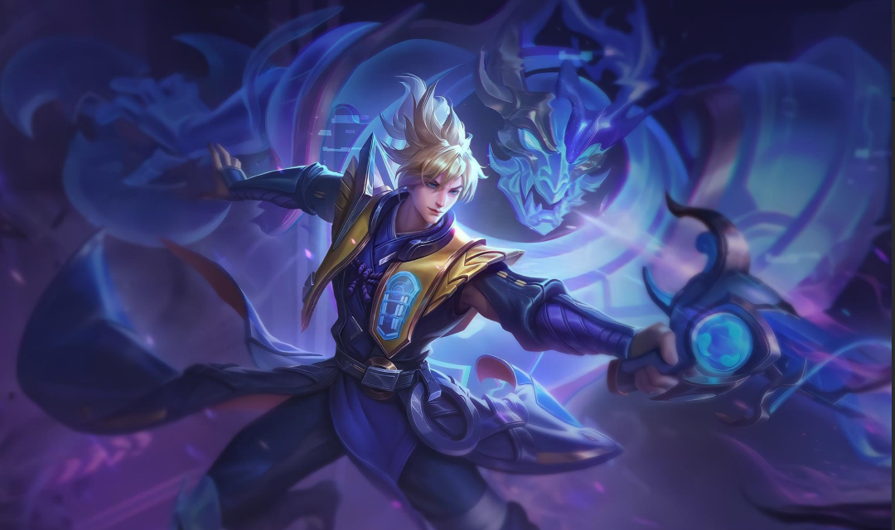
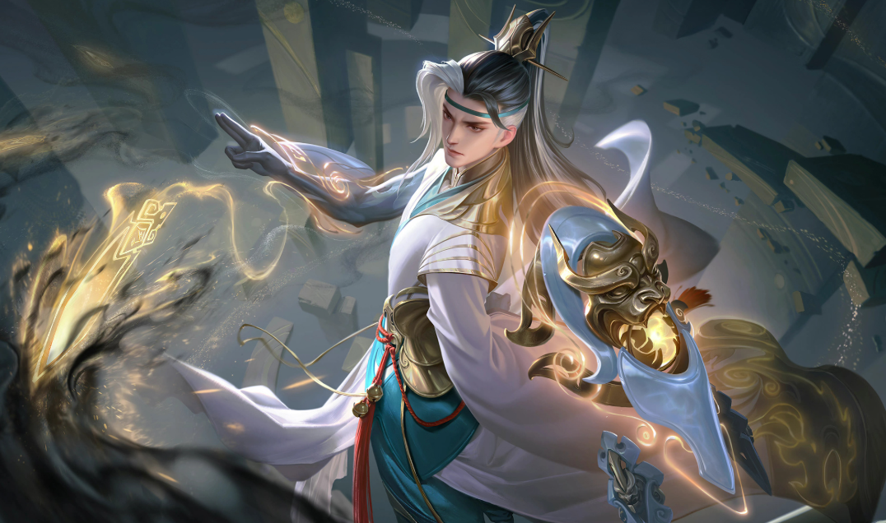
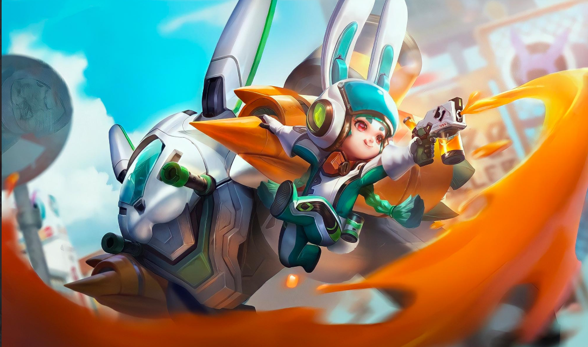

Valhein sở hữu khả năng gây sát thương liên tục mạnh mẽ, rất phù hợp với meta đầu game, giúp xả dame nhanh chóng và áp đảo đối thủ ngay từ những pha giao tranh đầu tiên.
-
Valhein
  -
Capheny
Capheny nổi bật với khả năng duy trì lượng sát thương ổn định từ đầu đến cuối game, kết hợp điểm mạnh vừa di chuyển vừa bắn, cùng lợi thế tầm đánh xa mạnh mẽ nhờ đại bác, tạo ra sức ép liên tục lên kẻ địch.
-
Wisp
 Wisp là một xạ thủ mạnh với sát thương diện rộng, có khả năng xả dame tốt trong các giao tranh cuối game. Với khả năng công thủ trụ mạnh mẽ, Wisp dễ dàng chiếm lợi thế và giành chiến thắng trong các trận đấu.